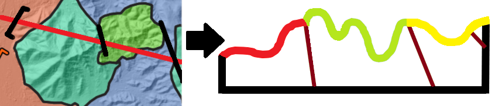
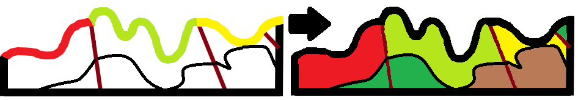
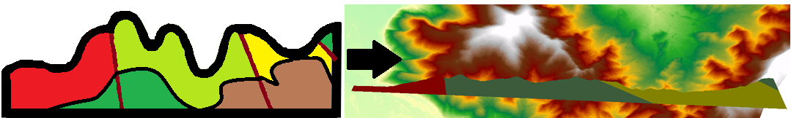

Antes de comenzar
SecGeol es una herramienta para QGIS que proporciona
un marco de trabajo para construir y modelar una interpretación
geológica del subsuelo a partir de una sección.
Antes de utilizar la herramienta, es recomendable preparar primero
un proyecto de sección geológica. Esto significa
cargar en la vista del mapa los insumos que puedan participar en
la construcción del perfil y definir correctamente el sistema de
referencia espacial del proyecto.
Sistema de coordenadas.
SecGeol trabaja con coordenadas proyectadas y unidades métricas.
Por esta razón, se recomienda utilizar una proyección UTM
correspondiente a la zona de estudio. Las coordenadas geográficas
expresadas en grados no son adecuadas para trabajar directamente
con las distancias que requiere la construcción del perfil.
Flujo de trabajo
SecGeol está organizado en tres fases consecutivas,
que permiten pasar desde los datos espaciales originales hasta una
representación tridimensional de la interpretación geológica.
1.
De la sección al perfil

En la primera fase se proporcionan los insumos necesarios para
generar un perfil topográfico a lo largo de una
línea de sección.
Este perfil constituye el marco sobre el cual podrás realizar
la interpretación geológica del subsuelo, utilizando la
información disponible y tu conocimiento geológico para
bosquejar contactos, unidades y estructuras.
2.
De líneas interpretadas a polígonos

Una vez realizada la interpretación del subsuelo, el dibujo
continúa siendo esencialmente un conjunto de líneas. En esta
segunda fase, SecGeol permite transformar esas líneas en
polígonos geológicos cerrados.
Los polígonos pueden identificarse mediante nombres, claves
o atributos correspondientes a las diferentes unidades o
litologías interpretadas.
Esta fase produce el perfil geológico poligonal,
que puede utilizarse directamente en mapas, figuras y reportes.
La salida conserva además una referencia métrica del perfil,
con las distancias correspondientes a lo largo de su eje
horizontal.
3.
Reconstrucción del perfil en 3D

En la tercera fase, los polígonos interpretados en el perfil
pueden reconstruirse nuevamente en su
posición espacial real, utilizando como
referencia la sección generada durante la primera fase.
El resultado es un perfil geológico con geometría
tridimensional, que puede visualizarse y analizarse en
entornos compatibles con información 3D, como la vista 3D
de QGIS, ArcScene o Leapfrog.
Insumos para preparar el proyecto de sección
Antes de comenzar, carga en QGIS los datos que utilizarás para
construir la sección. No todos son obligatorios, pero mientras
mayor sea la información disponible, mayor será el contexto para
realizar la interpretación.
1. Modelo Digital de Elevación o curvas de nivel
SecGeol necesita una fuente de elevación para construir el
perfil topográfico. Esta puede ser un
Modelo Digital de Elevación (MDE) o una
capa de curvas de nivel.
La fuente de elevación es uno de los insumos principales del
proyecto y debe encontrarse en un sistema de coordenadas
proyectado con unidades métricas. Es recomendable utilizar su
sistema de referencia como base para mantener la consistencia
espacial entre los datos empleados durante el procedimiento.
2. Línea de sección
Es la línea que define el recorrido sobre el cual se construirá
el perfil.
Puede utilizarse una sección existente perteneciente a una capa
de líneas o dibujarse directamente sobre el área de estudio.
Su trayectoria determina qué información del terreno, la
geología y las estructuras será proyectada sobre el perfil.
3. Geología
Si dispones de una capa de
polígonos geológicos, puedes incorporarla al
proyecto.
Cuando la línea de sección atraviesa diferentes unidades
geológicas, sus contactos pueden transferirse al perfil y
servir como referencia para realizar la interpretación del
subsuelo.
4. Estructuras
También puedes incorporar una capa de
estructuras geológicas.
Las estructuras que intersectan la línea de sección pueden
proyectarse sobre el perfil resultante y utilizarse como apoyo
durante la interpretación geológica.